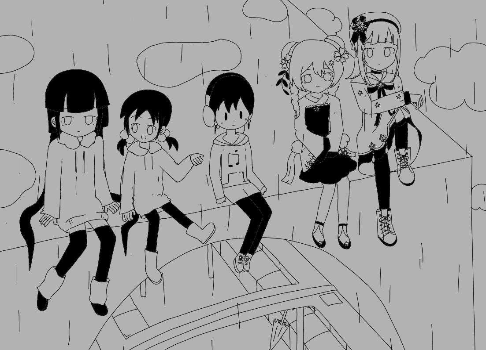
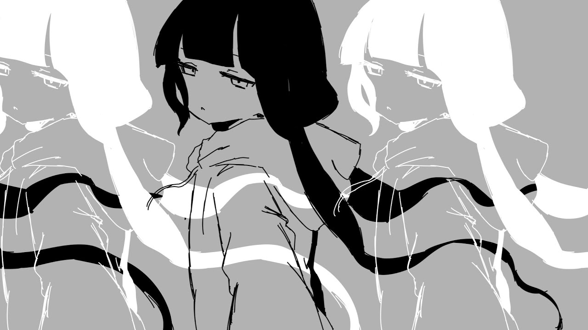
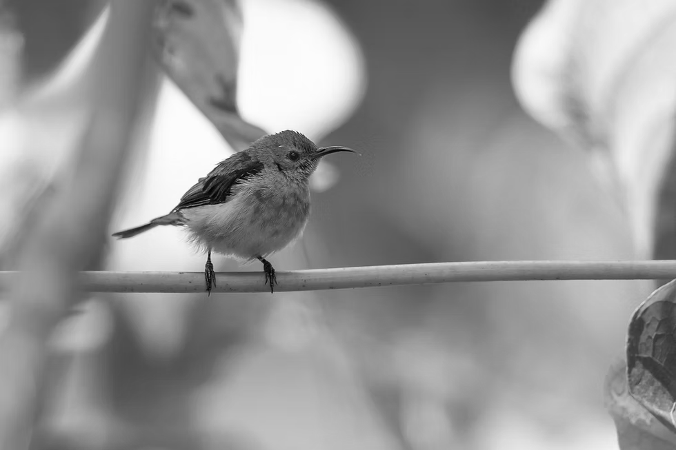

I have too many side quests. Creating music is a big one, although so far I've only explored digital music composition (what I hope to get into) a bit, while the majority of music-making has been through piano. I also love drawing! I have zero experience but have basically been spending all my free time on it, so hopefully I'll improve? If listening to music counts as a hobby, then it's probably my biggest… I listen to five hours of music on average, especially Vocaloid. Apart from the above, I also like writing, ice skating, and closing doors.
Did I mention I really like Vocaloid music? I tend not to listen to lyrical music and used to only prefer orchestral / instrumental, but Vocaloid voices have the redeeming quality of being vocal synths, meaning they're basically also instruments. Also, the genre is so vast that you can find music in just about every genre and just about every topic. There is a song in my playlist about simply the singer's bread burning to a crisp . As of writing this, my favorite work is probably Let's Go to Heaven by Kikuo, but my all-time favorite creator is most definitely Inabakumori, who has composed amazing songs such as Float Play, Lost Umbrella and Hadal Abyss Zone.
Birbism is not a cult*. It is a lifestyle. The great winged one lays their eyes upon the land, bringing its descendants to every corner of the continents, and it is truly a blessing to be able to experience the grace of the birbs. Not only are birbs cute, but they can also predict your fortune; take a look at birb behavior while you're out and about today. Do you only see one lone birb, flying ominously far above your head? You're probably in for some bad luck. Do you see a flock of birbs chirping happily near you? You might be gifted with some good fortune! Birbs are wondrous creatures of creation. This is why you should join Birbism. Today. Join Birbism today. Join Birbism. Join.
